Viewpoint on the scenic route of Red rock canyon national conservation area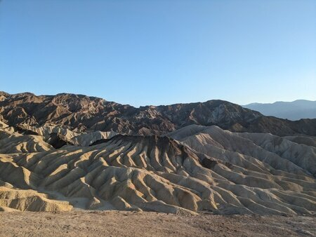Zabriskie point in Death valleyObservation point in Zion national parkAmpitheathre in Bryce canyon national parkBalanced rock in Glen canyon national recreation areaHorseshoe bendToadstool in Grand staircase national monumentGrand canyon
Half dome in Yosemite national park
Recommended hikes in Yosemite national park: Lower Yosemite trail (easy), Vernal and Nevada fall trails (difficult), Sentinel dome and Taft point (moderate).
A fallen tree in Sequoia national park
Recommended hike in Sequoia national park: Moro rock (easy).
Seals on one of the California coastal national monumentsPinnacle national park
For me Pinnacle national park was a bit disappointing. In case you decide to visit it, I would recommended to hike the Balconies cliffs-Cave loop (moderate).
Short detour to San FransciscoMuir woods
Grand prismatic spring in Yellowstone national park
Recommended hikes in Yellowstone national park: Grand canyon of the Yellostone (easy), Avalanche (difficult). Grand Teton national parkLandscape arch in Arches national parkCanyonlands
Recommended hikes in Arches national park: Delicate arch (moderate), Double arch(moderate), Landscape arch (easy).
I used Frontier's Go Wild one-month pass to visit Las Vegas, Sacramento, and Salt Lake City. The pass offers cheap flights but can only be booked one day in advance and has blackout dates. Their flight seats don't recline, making them uncomfortable but bearable for short flights. I always bought a carry-on bundle for blankets. In the middle of my trip, Frontier hiked the price for a carry-on from $30 to $40. While booking, I chose transit airports with lounge facilities, especially Denver with its Capital One lounge. Notably, Frontier supports TSA Pre for expedited security checks.
National parks entrance fees and reservation
Some national parks require reservations for crowd control, in addition to entrance fees. For visits to multiple national parks, consider buying an annual pass. Alternatively, you can enter national parks for free and without reservations by entering outside of their working hours.
Annual pass for national parks in US
Which car to rent?
I am 5'11" and I could sleep comfortably in a standard SUV (Hyundai Santa Fe). In an intermediate SUV (Toyota RAV4), my foot was hanging out, so either I had to sleep diagonally or put some luggage below my foot. Both of these options can accomodate two adults for sleeping.
What to pack?
For car camping, it is recommended that one carries a thick blanket to use it as a bedding. More blankets may be required depending on the weather.
Car camping in a SUV
Car insurance
Most rental companies offer car damage waiver and third-party liability insurance, but it's expensive. Instead, get a credit card that includes free car insurance, such as those from Capital One, Chase, or American Express. Alternatively, AAA membership provides these insurances with additional benefits at a better price.
What to eat?
Tortillas, canned foods, and ready-to-eat noodles (you can usually find hot water at gas stations or grocery stores in national parks). Bring fruits for easy snacks. If you can buy a portable gas stove and cylinder, you can cook regular meals, though I didn't try this. Plastic utensils are available at Walmart, gas stations, or delis.
How to manage stuffs in your car?
Bring a couple of trash bags for waste and dirty laundry. Trash bins are easy to find, but laundry machines in national parks are rare.
Exploring national parks
Check the National Park Service website and app for park info. Upon entry, you'll get maps and a newsletter with latest updates. For more details, talk to a ranger at visitor centers. For hiking, it is advised to download maps.me in advance as national parks have limited internet connectivity.
Shower and restrooms
Most national parks offer showers within or near the park. For details, ask a ranger at the visitor center. You can also find showers at truck stops, RV campsites, fitness centers, and airport lounges. Restrooms are available at visitor centers and trailheads, but trailhead restrooms do not have water.


 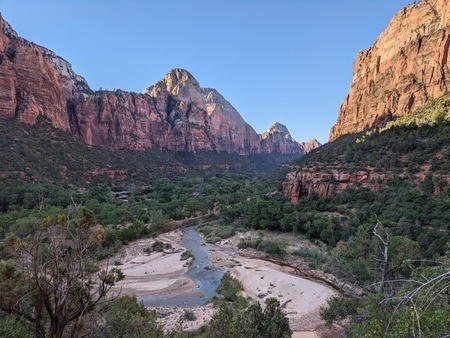
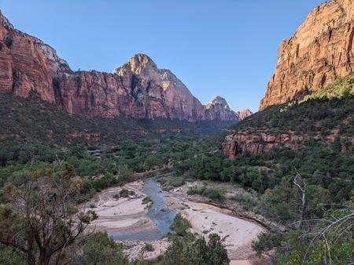

 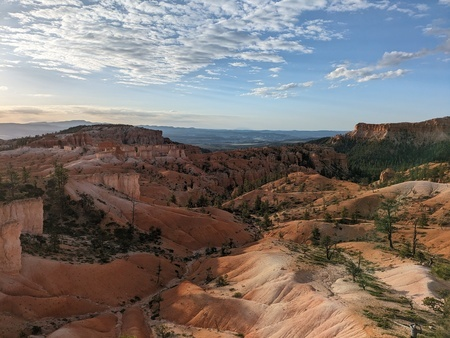
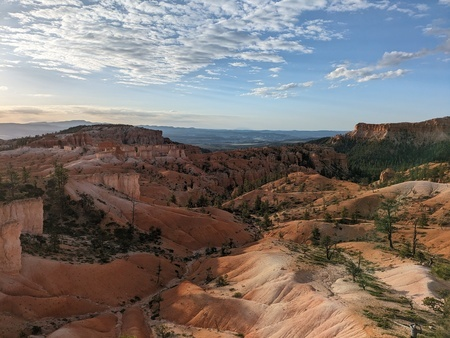


 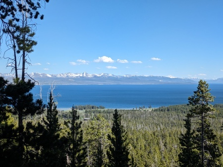
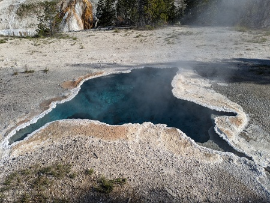
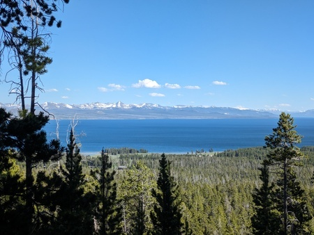
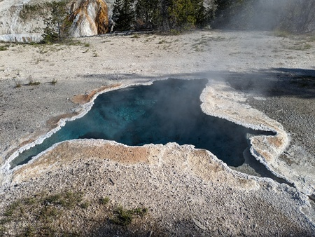
 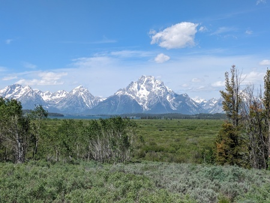
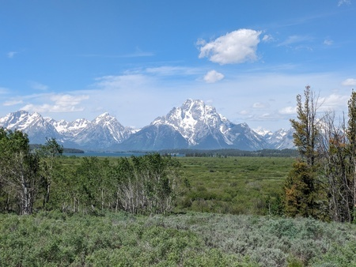
 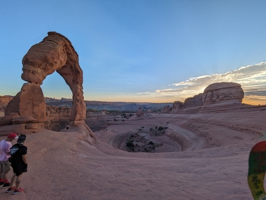
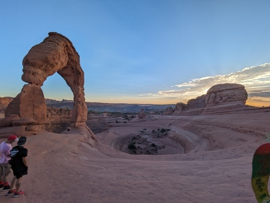